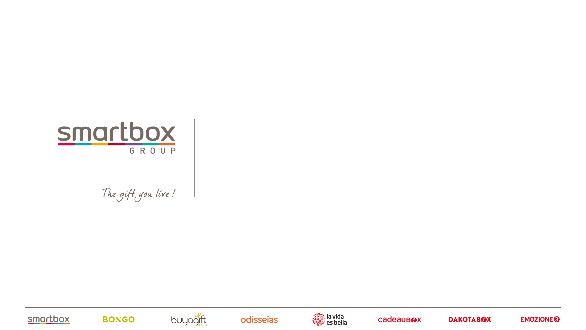

Going postal
messaging the past, present and hopes
Michael Garifullin - 13/07/2018

© Smartbox
How it was
- Function-style call to send something
- JarvisBooking\Mailer->sendCancellationEmail
- Resolve channel of notification, adjust presentation regaring that
- Collect data
- Render twig
- Common email sending stuff
- Wrap it to Swift_Message
- We're responsible for delivering
- Logging and error handling
How it is
- Fire event that something happened.
- espBundle->EmailFactory->createNew()
- Resolve campaingId for notification
- Collect array data
Render twig
- espBundle->SenderInterface->send()
- Send serialized array to external service with POST request
- We're
responsible not responsible for delivering
- Logging and error handling
How it can be
- Fire event that something happened.
- Serialize event by DTO schema
- Send it to JarvisMessenger rest-service
- Pre-flight data collection from external services if necessary
- Routing to different notification channels (vary vendor/carrier)
- Post-notification internall services (notification to partner/finace team)
- Consolidated service health monitor
- Logging and error handling (resend if unreachable, check response code)
How it may be
- Fire event that something happened.
- Transform it to JarvisMessenger\MessageQueue and send it to queue
- Consume message from queue
- Pre-flight data collection from external services if necessary
- Routing to different notification channels (vary vendor/carrier)
- Post-notification internall services (notification to partner/finace team)
- Service health monitor
- Message queue monitor (don't need to validate response code, monitor entire queue state)
Let's compare!
|
Past |
Present |
Future (REST) |
Fututistic (MQ) |
| Collecting |
Internal |
Internal |
Expandable |
Expandable |
| Presenting |
Twig |
3rd party |
Optional |
Optional |
| Sending object |
SwiftMessage |
EspBundle\Email |
ApiRequest\Email |
MessageQueue |
| Logic/routing |
No |
Not for now |
By design |
By design |
| Logging |
Yes |
Yes |
Service monitor |
Service + queue monitor |
| Error handling |
Internal |
Partially internal |
Partially internal |
99% external |
So what are the benefits?
- One type of domain task - one point of responsibility
- Opportunity to move messaging logic outside
- Easier to diagnose the issues and health state
- In case of message queue implementation - we'll able to get rid of painfull REST error handling